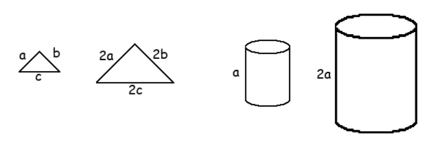
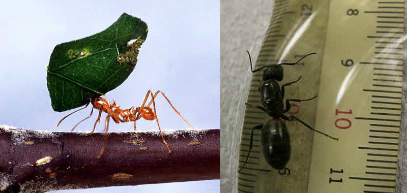
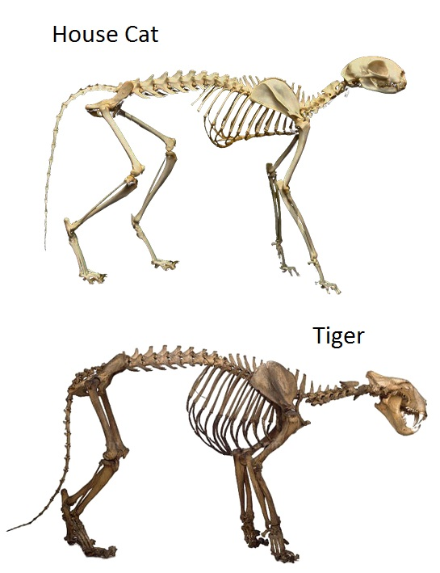
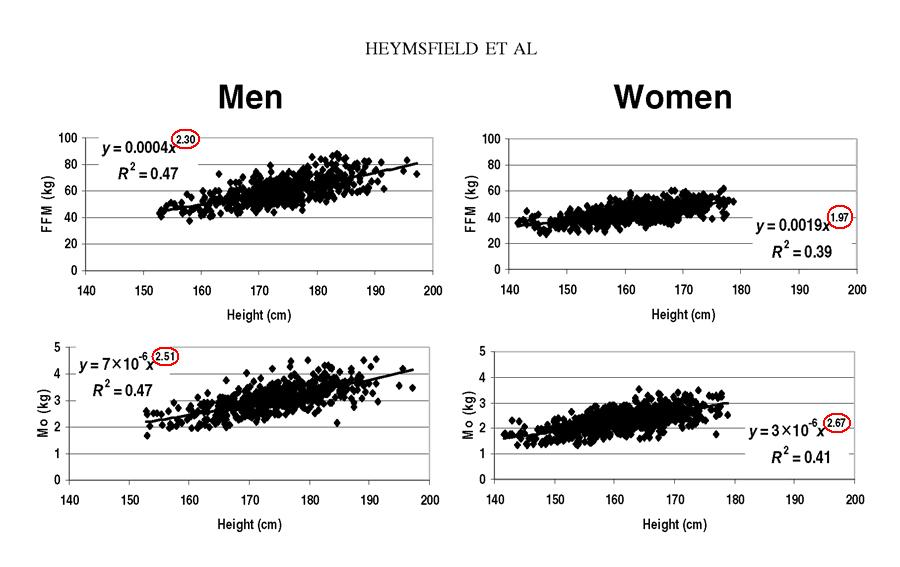
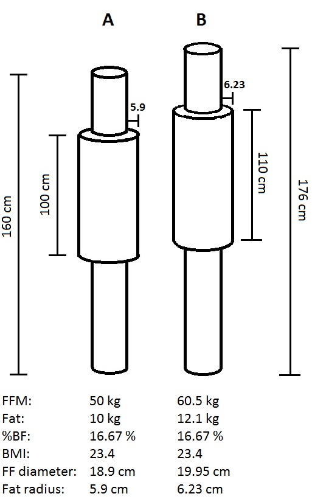
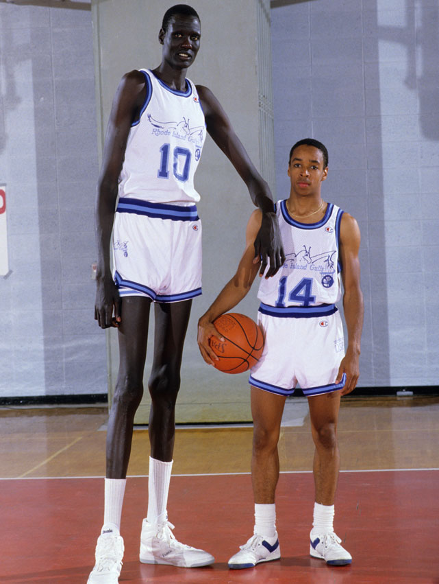

Effects of Scale
In the lecture we will examine geometric similarity, dynamic similarity and the effects of scale on body composition, energetics and performance.
Geometric similarity:
Objects are considered to be geometrically similar if they have the same shape and can be scaled by a single factor. The two triangles in the figure below are geometrically similar if you can convert one into the other by multiplying each side by the same value. Similarly, the three dimensional cylinders are also geometrically similar if one can be converted into the other by multiplying all dimensions by the same value. It follows that the area of the two dimensional objects will scaled by the square of the multiplying factor and the volume of the three dimensional object will scaled by the cube of the multiplying factor In the case of the cylinders, the cross-sectional area would be 4 times greater and the volume would be 8 times greater.

Structural Considerations:
The tiny ant has a length of 2 cm and a mass of 0.004 grams. The ant can lift over five times its mass and drag objects 25 times greater than its own mass. A geometrically similar ant with a length of 0.5 m (the size of a small dog) would be 25 times longer, with a leg cross section of 625 times greater (252) and a mass 15625 times greater (253). Since the mass is 25 times greater than the cross-section of its legs, the stress on the legs would be 25 times greater. Therefore, the ant would likely not be able to support it's own weight much less carry five times more.


The skeletons of large primates appear sturdier than their smaller counterparts. In the diagram below, the siamang is about 1/2 the height of the gorilla but we can see that when the skeletons are drawn with the same height, the cross-sections of the long bones of the arms and legs are scaled by a greater proportion than height. The gorilla has about ten times the mass of the siamang (80 kg vs 8 kg).The term "allometric scaling" was used to describe the cross-section increasing by a greater amount than the longitudinal scalar and keep the bone stress similar as body mass increases. This is also seen in the branches of trees and other structures in nature.
This does not apply to all animals. Fish quite often scale with positive allometry in which the mass increase with length to the power of 3.2. For instance, a 76cm muskie (muskellunge) has a mass 3.6 kg but a 100 cm fish has a mass greater than 8.6 kg. This may be due to the fact that the fish does not have to support its mass against gravity and other inertial forces the way that terrestrial animals do.

If we compare the standard house cat with a tiger, we can see similarities in shape and may wonder if the tiger is simply a larger scaled version of the house cat. The average domestic cat is about 0.7m in length and about 5.0 kg in mass and the average tiger is about five times longer than the cat. If the cat and the tiger are geometrically similar, we would expect the bones to be five times longer, 25 times greater in cross-sectional area (52), and 125 times greater in mass (53). However, the average tiger is not 125 times heavier, it is about 60 times greater (300 kg).
The figure on the left shows a comparison of the skeletons of a house cat and tiger scaled to have the same length from shoulder to pelvis. If we look closely, we can see that the bones of the legs of the tiger appear to have a greater cross-sectional area than the legs of the house cat. Since the tiger's legs must support 60 times more mass it is good that they have more than just 25 times the cross-sectional area.
Humans, as well as other animals do not increase in size by maintaining geometric similarity. A better approach is called "allometric scaling" in which one dimension increases differently than another. In the case of people (and many other animals), their transverse scalar does not increase as much as their longitudinal scalar but is proportional by the power of about 0.75. Therefore, the tiger will have bones that are 5 times longer than the cat but the cross-sectional area will be 17 times greater (5 x 5.75) and the mass will be 56 times greater (5 x 5.75 x 5.75). This allometric scaling has structural implications because the stress that is placed on bones due to gravity is governed by the mass and the cross-sectional area. If mass increases proportionally with the cube of length and cross-sectional area increases only with the square of length, the tiger would have difficulty supporting 125 times more mass with bones that were only 25 times greater in cross-sectional area. This is because the bone density of the tiger is not different from the cat but the forces of motion are not simply gravitational. Studies have shown that the effective moment arms of muscles change with larger mammals such that the required muscle forces per muscle volume scale the same for mammals from mice to horses.
Body Composition Considerations and Elastic Similarity:
The Body Mass Index (BMI) is the most widely used index for ideal body weight for humans. It is calculated by dividing body mass (kg) by the square of height (m). If people were geometrically similar, mass should be divided by height cubed but, as noted above, this is not the case. A better exponent for bone mass (Mo) would be about 2.5 but fat free mass (FFM)is roughly proportional to the square of height for women and the power of 2.3 for men (see the graphs below).


The greatest criticism of BMI as a measure of body composition is that the mass could be fat or lean tissue and assuming a person has a large amount of fat based on a high BMI is not necessarily a valid assumption. Body builders with large amounts of muscle and very little fat have the same BMI as sedentary individuals with higher percentages of body fat. BMI has been used by the French fashion industry to ban the hiring of models with a BMI less than 18 in an attempt to reduce eating disorders in the industry. The fashion industry has a policy of hiring tall models because they appear thinner than shorter models and this is supported by elastic scaling and is further strengthened by the BMI rule.
In the example to the right, we compare a 5'10" (1.78m) fashion model who weighs 130 lbs (59 kg) with a geometrically similar 5'0" model. In order to appear as thin or equally proportioned, the shorter model who has 0.857 the height (60/70=0.857), must have 0.8573 = 0.63 times the volume or mass. This means that the shorter model must weigh less than 82 lbs (130 x 0.63 = 81.9) which is unrealistic. The BMI of the taller model (A) is 18.6 but the BMI for the geometrically similar model (B) would only be 16.0. A healthy 5'0", 100 lbs model is also shown (C) and appears less thin than the taller model even though they both have a healthy 20% body fat. To be geometrically similar by reducing body fat and appearing the same as the taller model, the shorter model would have to reduce her body fat to 5.3% which is too extreme to be considered healthy.

Humans are elastically similar such that the transverse scalar does not increase the same amount as the longitudinal scalar. In this regard, the BMI which divides mass by height squared is a better match than the assumption of geometric similarity which would divide body mass by height cubed. The figure to the right shows cylinder A of 50 kg mass, a density of 1.1 (fat free), a height of 160 cm and a diameter of 18.9 cm. A 100 cm area has 10 kg of fat with a density of 0.9 wrapped around a 100 cm zone. Cylinder B is 10% taller (176cm), 21% heavier (1.102), 21% more fat (12.1 kg) and appears thinner even though both objects have the same % body fat, BMI and cylinder B has a greater diameter and the ridge of fat radius is larger. Cylinder B also appears more frail and we know that with geometric scaling, objects become more frail with increased size because mass increases with L3 and cross-sectional area only increases with L2 which means stress (force/cross-sectional aarea) increases.
Even though allometric scaling helps to reduce the problem of increased stress on the bone than geometric scaling, will taller individuals actually be more frail? The data of Haymsfield (above) shows that bone mass scales with the power of 2.67 vs height (1.97) in women which helps the bones maintain stress. In the example to the right, the taller object has a diameter that is 5.6% greater than A which would yield a cross-sectional area that is 11.4% greater (1.0562) and must support 21% more mass. This would indicate that the stress is greater on B but if the bone diameter scaled more geometrically (2.67 according to Haymsfield) this would change the bone cross-sectional area to be L1.67 which would mean that the 10% longer bones would have a cross-sectional area of 1.11.67 = 1.17 which is 17% greater cross-sectional area to support the 21% greater mass.

Due to allometric scaling, tall humans may appear thinner and more frail than their shorter counterparts but the reality is they likely have a greater percentage of body fat than they appear and are less frail than they appear.
How is it possible for a woodpecker's head to withstand accelerations of 1500 g when humans cannot tolerate accelerations greater than 400 g?
The answer to that question can be found in scaling. If we assume that the brain tissue of humans and woodpeckers can withstand the same stress and that stress is equal to force per cross-sectional area, and force = mass x acceleration, then we can scale the stress knowing the mass, cross-sectional area, and acceleration.
Stress = force /
cross-sectional area = (mass x acceleration) / cross-sectional area
Mass: Human =
1.4
kg, Woodpecker = 0.002 kg
Cross-sectional
Area: Human = 113 cm2,
Woodpecker = 1.54 cm2
Assuming the
human
brain can tolerate 400g of acceleration, the stress would be 1.4(400 x
9.81)
/
113 = 48.6 N/cm2
For the same
stress, the woodpecker could withstand an acceleration of 48.6(1.54) /
(0.002
x 9.81) = 3814 g
We can see that due to the much smaller mass of the woodpecker's brain, it can withstand accelerations almost ten times larger than the human brain.
Performance Considerations:
Muscle force is proportional to the cross-sectional area. Larger people are stronger than small people because they have a greater cross-sectional area of muscle. For this reason, weightlifting competitions have weight classes to make the competition fair. An examination of weightlifting records indeed shows that the heavier weight classes lift greater weight but if we divide the weight lifted by the lifters body mass, we see that the smaller lifters lift more weight per body mass than the larger lifters. The reason for this is that the lifters must raise their own mass in addition to the mass of the weight and since body mass increases to a greater extent than muscle cross-sectional area (volume vs area), the larger lifters have a disadvantage.

We know that vertical jump performance depends on the power to weight ratio (Dowling and Vamos, 1993). Now lets look at the effects of scale with a comparison of the cat with the tiger. As mentioned above, a geometrically larger cat with five times the leg length would have muscles that are 25 times greater cross-sectional area and 25 times more force. The mass of the large cat would be 125 times greater and so too would the muscle power because the 25 times greater force would be multiplied by a five times greater velocity (due to the muscles being five times longer). Therefore, the power to weight ratio would be the same. However, the tiger is elastically similar and has a force increase of 17 and a mass that is 56 times greater. The power would be 17 x 5 = 85 times greater which gives an increased power to weight ratio for the tiger. The power to weight ratio is only modestly greater than the house cat and each animal has a similar vertical jump height - both animals can raise their CofG about 1.5 meters.
Click here to see a video of a tiger jumping and click here to see a video of a house cat jumping. Both animals have about the same displacement of the centers of mass.

Science fiction authors and screen writers often violate basic scientific principles in their creations. Can you identify the inconsistencies with the fictional character to the right?
The science fiction comedy movie to the left reduced the children to geometrically smaller people. If this were possible, the children would have the same power/weight ratio and have a vertical jump equal to 20-30cm which would easily allow them to jump over the dog.
Dynamic Similarity:
An interesting discovery of human and animal
motion
is that
high degree of dynamic similarity exists. It has been shown
that
the speed at which quadrupedal animals switch from a walk to a trot, to
a gallop can be scaled to the length of their legs. For
example,
the horse has a much longer leg than a dog but the speed at which each
switches from a walk to a trot has the same "Froude Number".
This
also exists for humans (see below).

Long Levers for Throwing:
Does a tall pitcher with long arms have an advantage for throwing a ball at high velocity? If we take the example of two geometrically similar athletes with athlete A 20% taller than athlete B. Athlete A would have an arm that is 20% longer than Athlete B, the muscle cross-sectional area (force) would be 44% greater (1.22 = 1.44), and the moment arm of the muscle would be 20% greater. Therefore, the moment of force would be 73% greater (1.23 = 1.73). However, the segment's moment of inertia would be 149% greater which means that the limb of Athlete A would have 31% reduced angular acceleration as Athlete B which means that Athlete A would attain an angular velocity that is 31 % lower than Athlete B. With a limb that is 20% longer the tangential velocity would still be 17% lower due to the lower angular velocity (see the example below).

If the mass of
the ball is significant, it would increase the disadvantage of
the longer
lever because the ball's moment of
inertia would be greater due to its greater distance from the axis.